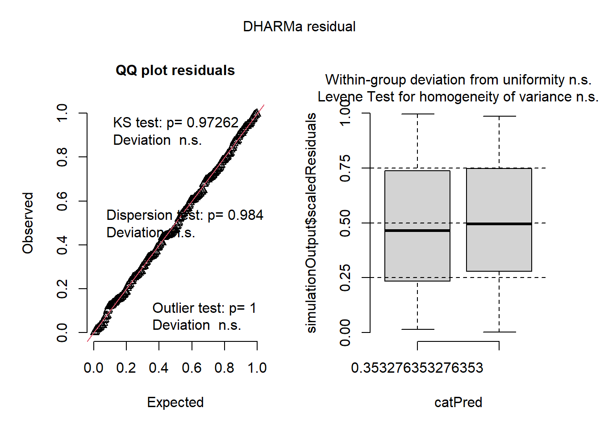

#read in packages
library(tidyverse)
library(janitor)
library(here) #for file management
library(DHARMa) #for model diagnostics
#read in data used for assignment
sst <- read.csv(here("data", "SST_update2023.csv")) #using package 'here' to fix file path issue
nest_boxes <- read.csv(here("data", "occdist.csv")) #using 'here' to fix file path render issueFinal-code
link to GitHub repo: https://github.com/jrumkin/ENVS-193DS_spring-2025_final
Set Up
Problem 1. Research Writing
a. Transparent statistical methods
In part 1 they used ((something to determine correlation between variables)). In part 2 they used ((something to determine if there is a difference in means between more than 2 groups)).
b. More information needed ***
An additional piece of information that should be given is the type of t-test that was ran in both parts so the reader can use that to learn about the data type and assumptions made.
An additional test that could be performed is a Cohen’s d in order to quantify the effect size between groups. This increases data transparency and helps the reader understand the result.
c. Suggestions for rewriting
We found a effect size (Cohen’s d = Cohen’s d value) correlation between distance from headwater (km) and annual total nitrogen load (kg year-1) (Type of t-test, t(degree of freedom) = t value, p = 0.03, \(\alpha\) = significance level).
We found a effect size (Cohen’s d = Cohen’s d value) difference in average nitrogen load (kg year-1) (Type of t-test, t(degree of freedom) = t value, p = 0.02, \(\alpha\) = significance level) between sources (urban land n = group sample size, atmospheric deposition n = group sample size, fertilizer n = group sample size, wastewater treatment n = group sample size, and grasslands n = group sample size).
Problem 2. Data Visualzation
a. Cleaning and summarizing
Notes to myself on things that need to be done or be true abt the data table: 1. 72 rows total (this likley means each month has a row for all 6 years) 2. year data is factors not numbers 3. month data is ordinal factor data 4. the third column is mean sst (so I need to find the mean temp for each month in each year so like Aug 2018 is a different row than aug 2019)
sst_clean <- sst |>
mutate(date = ymd(date), #make the date column into year-month-date recognized data
year = year(date), #make a new column of the year from the date column
month = month(date)) |> #make a new column of the month from the date column
filter(year == c("2018", "2019", "2020", "2021", "2022", "2023")) |> #select only rows from those years 2018 - 2023
select(year, month, temp) |> #select columns year, month, and temp
group_by(year, month) |> #group the data by year and then month
summarise(mean_monthly_sst = round((mean(temp, na.rm = TRUE)), 1)) |> #calculate mean monthly sea surface temps in each month of each selected year
mutate(year = as.factor(year)) |> #set year column as a factor
mutate(month = factor(month.abb[month], #set the month column to factor using the abbreviated month names
levels = month.abb, #the levels of the ordinal factor are set my the month abbreviations
ordered = TRUE)) |> #makes the factor ordinal
ungroup() #ungroup the data to be worked with normally later
slice_sample(sst_clean, n = 5) #display 5 random rows from sst_clean# A tibble: 5 × 3
year month mean_monthly_sst
<fct> <ord> <dbl>
1 2019 Nov 16.8
2 2018 Jun 15.5
3 2018 May 13.6
4 2021 Jan 13.9
5 2019 Jan 14.7str(sst_clean) #display sst_clean data structuretibble [72 × 3] (S3: tbl_df/tbl/data.frame)
$ year : Factor w/ 6 levels "2018","2019",..: 1 1 1 1 1 1 1 1 1 1 ...
$ month : Ord.factor w/ 12 levels "Jan"<"Feb"<"Mar"<..: 1 2 3 4 5 6 7 8 9 10 ...
$ mean_monthly_sst: num [1:72] 15.1 14.3 13.5 12.8 13.6 15.5 18.2 19.6 18.2 18.4 ...b. Visualize the data
sst_visual <- ggplot(data = sst_clean, # make a new object called sst_visual, use ggplot to make a visualization from data sst_clean
aes(x = month, # month on x axis
y = mean_monthly_sst, # temp on y axis
group = year,
color = year)) +
geom_line() +
geom_point() +
scale_color_manual(name = "Year",
values = c("2018" = "#DDADFE", #manually assign colors by group
"2019" = "#BB9AD3",
"2020" = "#9A78B1",
"2021" = "#785590",
"2022" = "#523467",
"2023" = "#2F193E" )) +
theme_bw() +
theme(plot.background = element_rect(fill = "white"),
panel.grid.major = element_blank(), # remove major gridlines
panel.grid.minor = element_blank(), #remove minor gridlines
legend.position = c(.1, .7)) + #***
labs( x = "Month",
y = "Mean monthly sea surface temperature (°C)",
legend = "Year")
sst_visualProblem 3 Data analysis
##. a. Response variable
The 1s and 0s in the columns sp, cs, and tm represent the species type in each nest box observation for Swift Parrot, Common Starling, and Tree Martin respectively where a 1 means that species was observed and a0 means it was another species or empty. The column e represents if the nest box was occupied or not, with a 1 meaning it was empty and a 0 meaning it was occupied.
b. Purpose of study
Swift Parrots are unique because they are the focus bird for restoration purposes and they have unique nesting habits that make as little of 5% of the available area suitable for their nesting and they do not return to nesting sites of previous years. The other two species, Common Starlings and Tree Martins, are common and abundant in the study area and reported behavior of using nest boxes intended for other species.
c. Difference in “seasons”
“Our study presents data from the summer breeding seasons of 2016 and 2019 when parrots bred at the study area (during the interval, parrots were absent from the site)” WHYY
The study uses data on the summer breeding seasons of 2016 and of 2019. Data was collected in November and some in December in each study season, which coincided with the fledging period for Common Starlings, mid nestling period for Swift Parrots, and nest building for Tree Martins.
d. Table of models
| Model Number | Season | Distance to forest edge | Model description |
|---|---|---|---|
| 1 | No predictors (null) | ||
| 2 | X | X | Year + Distance (saturated) |
| 3 | X | Year only | |
| 4 | X | Distance only |
e. Run the models
mod1 <- glm(sp ~ 1, #null model
data = nest_clean,
family = "binomial")
mod2 <- glm(sp ~ season + edge_distance, #saturated model
data = nest_clean,
family = "binomial")
mod3 <- glm(sp ~ season,
data = nest_clean,
family = "binomial")
mod4 <- glm(sp ~ edge_distance,
data = nest_clean,
family = "binomial")f. Check the diagnostics
# Simulate residuals
res1 <- simulateResiduals(mod1)
res2 <- simulateResiduals(mod2)
res3 <- simulateResiduals(mod3)
res4 <- simulateResiduals(mod4)
# Set plotting layout
par(mfrow = c(2, 2))
# Plot each separately
plot(res1, main = "Null")
plot(res2, main = "Saturated")
plot(res3, main = "Model 3")
plot(res4, main = "Model 4")